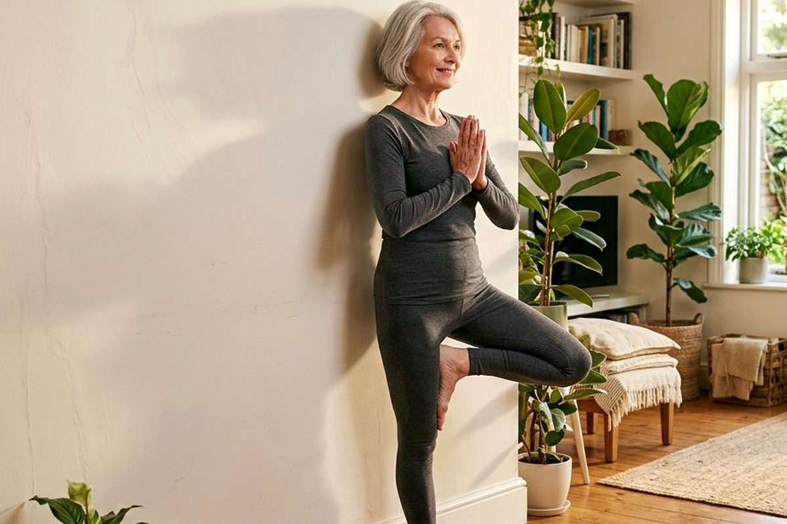

Strength Training After 60: A Simple Starting Plan
Strength training after 60 is not about looking different. It is the most effective intervention we have for staying out of a care home: it preserves muscle mass, improves bone density, improves balance and reduces falls. The people who train for it in their sixties and seventies are the ones still carrying grandchildren in their eighties. It is also, genuinely, never too late to start — even at 90.
